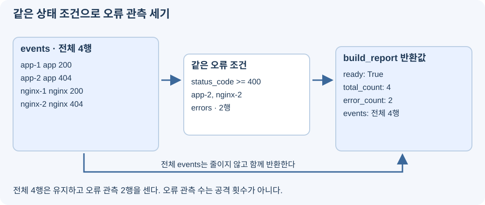

앱과 Nginx를 같은 모양으로 바꿨지만 아직 따로 실행하고 있다. 두 결과를 한 목록에 모으고 상태 코드 하나로 오류 관측을 골라보자. 이번 시간에 확인할 흐름이다.

- 한 실행 결과에서 app과 nginx를 함께 읽는다.
- 통합 목록에 같은 오류 조건을 적용해 전체·오류 관측 수를 구한다.
mini-watch-m5d3
└─ monitor/backend/learning/
├─ normalize_app.py 완성한 앱 변환
├─ normalize_nginx.py 완성한 Nginx 변환
├─ merge.py 이번에 합치기
└─ report.py 이번에 집계1단계. 두 결과를 하나의 목록에 담기
합치는 함수 완성하기
events라는 빈 목록을 만들고, 앱 원본은 normalize_app으로, Nginx 원본은 normalize_nginx로 바꿔 append로 추가한다. 각 원본의 읽는 방식 차이는 변환 함수 안에 남는다. 분석 파일 바꾸기
- VS Code에서
C:\work\mini-watch-m5d3폴더를 열고monitor/backend/learning/merge.py을 선택한다. - 파일 내용을 아래 전체 코드로 바꾸고 Ctrl+S로 저장한다.
monitor/backend/learning/merge.py — 파일 전체
from learning.log_data import read_logs
from learning.normalize_app import normalize_app
from learning.normalize_nginx import normalize_nginx
def load_normalized_events():
logs = read_logs()
events = []
for number, event in enumerate(logs["app"], start=1):
events.append(normalize_app(event, number))
for number, line in enumerate(logs["nginx"], start=1):
events.append(normalize_nginx(line, number))
return events
if __name__ == "__main__":
events = load_normalized_events()
for event in events:
print(event["id"], event["source"], event["method"], event["path"], event["status_code"])
print("전체 관측:", len(events))다른 폴더명으로 clone했다면 열기 경로와 아래 cd의 폴더명도 실제 이름으로 바꾼다. 프로젝트 Command Prompt에서 실행하자. 프로젝트 폴더의 Windows CMD
cd /d C:\work\mini-watch-m5d3
docker compose exec -T monitor-api python -m learning.mergeapp-… app GET /nginx-check 404
nginx-… nginx GET /nginx-check 404
전체 관측: 내 파일의 전체 행 수출력 모양을 줄인 예시다. 실제 ID에는 숫자가 들어가고 총계는 내가 만든 요청에 따라 다르다. 앱 행을 먼저, Nginx 행을 나중에 붙였으므로 시간 순서로 정렬한 목록은 아니다. 두 출처에 같은 경로가 있다고 한 행을 지우지 않는다. 지금은 중복 제거가 아니라 출처가 다른 관측을 함께 보는 기능을 만드는 중이다.
2단계. 공통 상태 값으로 오류 집계하기
오류 조건을 한 번만 쓰자
이번 실습에서는 status_code가 400 이상인 행을 오류 관측으로 센다. HTTP 응답 실패 범위를 묶는 조건이며, 보안 공격 여부를 판단하는 규칙은 아니다. 분석 파일 바꾸기
- VS Code에서
C:\work\mini-watch-m5d3폴더를 열고monitor/backend/learning/report.py을 선택한다. - 파일 내용을 아래 전체 코드로 바꾸고 Ctrl+S로 저장한다.
monitor/backend/learning/report.py — 파일 전체
from learning.merge import load_normalized_events
def build_report():
events = load_normalized_events()
errors = []
for event in events:
if event["status_code"] >= 400:
errors.append(event)
return {
"ready": True,
"events": events,
"total_count": len(events),
"error_count": len(errors),
}
if __name__ == "__main__":
report = build_report()
if report["ready"]:
print("전체 관측:", report["total_count"])
print("오류 관측:", report["error_count"])
else:
print(report["message"])load_normalized_events가 두 출처의 공통 목록을 준다. for 안에서는 source를 따로 검사하지 않고 같은 status_code 조건으로 errors에 담는다. len은 목록의 항목 수를 구한다. 프로젝트 폴더의 Windows CMD
cd /d C:\work\mini-watch-m5d3
docker compose exec -T monitor-api python -m learning.report전체 관측: 내 현재 전체 행 수
오류 관측: 그중 상태가 400 이상인 행 수예시의 설명 대신 내 화면에는 숫자가 나온다. 전체는 두 출처를 합한 행 수이고 오류는 그중 조건을 만족한 행 수다. /training-missing처럼 직접 만든 404도 포함한다.
3단계. 새 정상 요청과 오류 요청을 비교하기
새 오류가 집계에 들어오는지 보자
추가 동작 후 재집계하기
- 현재 오류 관측 수를 확인한 뒤 http://localhost:8081/count-check을 연다.
- 아래 명령을 다시 실행해 새 경로의 app·nginx 행과 오류 관측 증가를 확인한다.
프로젝트 폴더의 Windows CMD
cd /d C:\work\mini-watch-m5d3
docker compose exec -T monitor-api python -m learning.merge
docker compose exec -T monitor-api python -m learning.report404 경로의 새 관측이 조건에 들어간다. 브라우저 추가 요청과 기록 시점 차이가 있으므로 정확히 두 행 증가만을 성공 조건으로 삼지는 않는다.
정상 기록이 오류 목록에서 빠지는 이유를 확인하자
같은 조건으로 판단하기
- 게시판 목록을 연 뒤 learning.merge 명령을 다시 실행한다.
- GET /의 상태 200을 찾아
report.py의status_code >= 400조건과 비교한다.
200인 행은 전체 목록에는 남지만 오류 목록에는 들어가지 않는다. 기록을 삭제한 것이 아니라 조건을 만족한 행만 별도로 센 것이다.
확인문제
확인문제 1. merge.py는 어떤 두 결과를 합치는가?
정답과 해설
앱 원본을 normalize_app으로 바꾼 결과와 Nginx 원본을 normalize_nginx로 바꾼 결과를 합친다.
확인문제 2. events.append는 어떤 일을 하는가?
정답과 해설
변환된 행 하나를 통합 목록 끝에 추가한다.
확인문제 3. 합친 목록이 자동으로 시간 순서가 되는가?
정답과 해설
아니다. 이 코드에서는 앱 행 뒤에 Nginx 행을 붙인다. 시간 정렬은 하지 않는다.
확인문제 4. 같은 경로가 양쪽에 있으면 왜 하나를 지우지 않는가?
정답과 해설
서로 다른 출처의 관측을 보존하는 목적이기 때문이다. 중복 제거를 구현하는 시간이 아니다.
확인문제 5. 이번 오류 집계의 조건은 무엇인가?
정답과 해설
status_code >= 400이다. 정규화한 숫자 상태에 같은 조건을 쓴다.
확인문제 6. 오류를 찾을 때 source를 먼저 구분해야 하는가?
정답과 해설
아니다. 두 출처 모두 상태 항목과 타입을 맞췄기 때문에 같은 조건을 쓴다.
확인문제 7. len(events)와 len(errors)는 무엇이 다른가?
정답과 해설
전자는 전체 관측 행 수, 후자는 그중 오류 조건을 만족한 행 수다.
확인문제 8. GET /의 상태 200은 어떤 집계에 포함되는가?
정답과 해설
전체 관측에는 포함되고 오류 관측에는 포함되지 않는다. 400 이상이 아니기 때문이다.
확인문제 9. 오류 관측 10이면 공격이 10번 있었다고 말할 수 있는가?
정답과 해설
없다. 직접 만든 404와 같은 요청의 여러 출처 기록도 포함될 수 있다.
확인문제 10. 새 요청 후 집계 결과를 확인하려면 무엇을 다시 실행하는가?
정답과 해설
learning.report를 다시 실행한다. 매 실행에서 현재 원본을 읽고 변환·집계한다.
수집된 원본을 읽어 변환·통합·집계하는 코드가 이어졌다. 마지막에는 이 결과를 준비된 감시 화면에서 읽고 새 행동까지 반영되는지 확인한다.